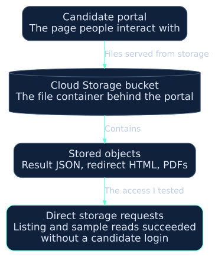
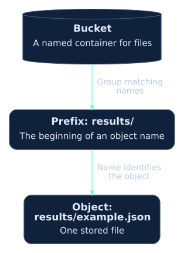
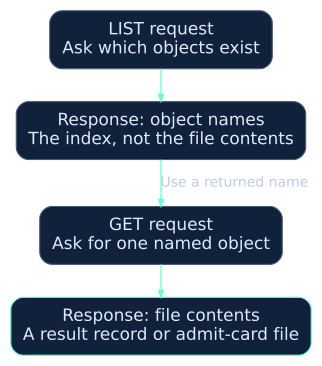
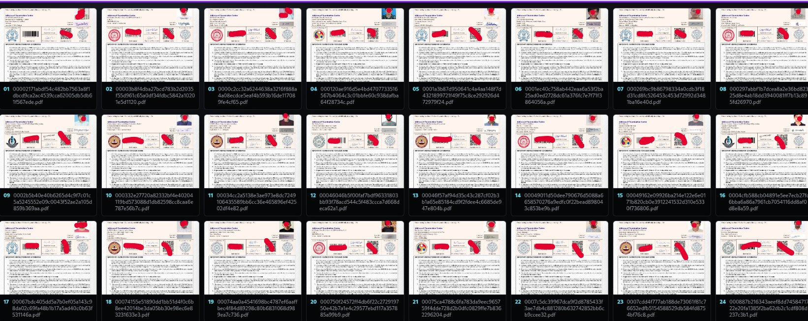
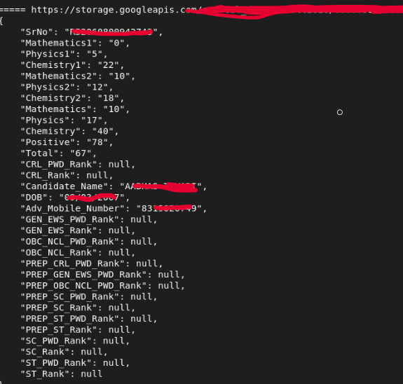
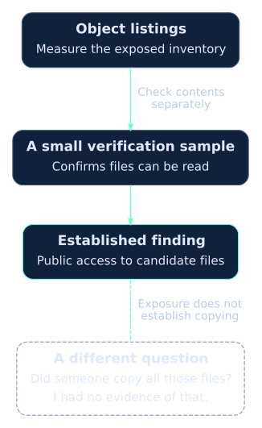

On June 2, 2026, I was looking at how the JEE Advanced candidate and result portal served its files. A request for an object that did not exist returned an error containing a storage bucket name. I followed that clue.
Over roughly 35 minutes, between 17:40 and 18:15 Dubai time (GST), I found that the underlying storage allowed unauthenticated listing and reading of candidate files. The route into this issue was the storage layer behind the portal.
A quick map of the portal and its files
The candidate portal was the website people used in their browser. The files behind it lived in Google Cloud Storage, a service for storing and serving files. The portal and the storage service had different jobs, and access to the files depended on the storage permissions too.

A few storage terms, in plain language
Bucket, object, and prefix
A bucket is a named container. An object is one item stored in it, usually a file. A prefix is the beginning of an object's name, which can be used to group or list matching names.
For example, results/example.json could be an object name, and results/ its prefix. Slashes can make object names look like folders. This naming example illustrates the terms; it is not a real candidate file path.

Listing is the index; reading is opening a file
A listing asks the storage service which objects exist. A read asks for the contents of one named object. Being allowed to see the index and being allowed to open a file are separate permissions.
That is why the investigation needed both checks. Finding a bucket name was a starting point. Listing would establish whether I could discover its filenames, and reading a small sample would establish whether I could retrieve candidate information.
A website login and storage permissions are separate controls
A portal may check that a person is logged in before showing a download link. If the storage service also accepts direct requests, it must enforce the intended access rules for those requests. Otherwise, someone can ask storage for the file without following the portal's login flow.
Here, unauthenticated means I made the storage request without supplying a candidate's login credentials or session.
The error that gave me a starting point
I started with the portal's static files and storage-backed paths. One request to a non-existent object returned an error that revealed the Google Cloud Storage bucket being used behind the application.
Knowing a bucket's name does not establish a vulnerability. Plenty of applications use storage names that are easy to see. I still needed to check what an unauthenticated request was allowed to do with it.
Could I list what was inside?
I made a small, limited listing request. The storage endpoint, the address handling those requests, returned object names under prefixes associated with results and admit cards. The important part was that I was getting an index of stored files without a candidate login.
That changed the situation. I was no longer relying on a guessed filename or a URL the portal had given me for one candidate. I could discover filenames directly from the storage service, without a candidate session.
There are two separate permissions to think about here: listing objects and reading their contents. Google documents them as storage.objects.list and storage.objects.get. A successful listing does not, on its own, prove that the files can be downloaded.
So the next step was to check a small sample of the listed objects.

The files were readable too
The exposed paths included three kinds of files, with different roles:
- Result JSON: structured data written as field names and values, including scores and candidate details.
- Redirect HTML: a small web page that sends the browser to another location, in this case an admit-card file.
- Admit-card PDF: the document a candidate would open or download.
Those are different objects used in the same candidate workflow. A redirect page and the PDF it leads to are two files, even when they relate to one person.
The sample result record contained candidate details alongside exam scores. I could see fields for the candidate's name, date of birth, mobile number, serial or roll identifiers, subject marks, total score, positive score, and rank-related values. Some rank fields in the sample were null.
This shortened excerpt shows how those fields appear in JSON. Personal information and the score value are redacted:
{
"Candidate_Name": "[redacted]",
"DOB": "[redacted]",
"Adv_Mobile_Number": "[redacted]",
"Total": "[redacted]",
"CRL_Rank": null
}The name on the left identifies the field; the value on the right is its contents. null means no value is set in that field. It should not be read as a score of zero or used by itself to infer a candidate's result.
The screenshot below shows the original record with candidate details redacted.


I did not need credentials, cookies, or a valid candidate session to retrieve the verification samples. The storage endpoint was serving them directly.
How large was the exposed inventory?
The object counts I recorded at the time of reporting were:
- 179,694 result JSON records.
- 187,389 admit-card redirect HTML files.
- 187,390 admit-card PDFs.
These are counts of different types of objects. They should not be added together and described as that many separate students, and they are not a count of files I downloaded.
I downloaded only a small number of files to verify the issue and deleted them afterwards. The inventory established the potential scope; the samples established that candidate data was readable.
Why the combination mattered
The bucket name was a clue. Listing exposed the filenames. Reading exposed the contents. Taken together, those permissions removed the need to go through the candidate portal to retrieve the files.
Even a long or unpredictable filename offers little protection when an unauthenticated request can ask the storage service for the names. Once those names are available, public read access provides the next step.
The concern here was confidentiality: who could see the information. Read access is enough to expose private information, even if the reader cannot change it. I demonstrated file reads; IIT Roorkee stated that the storage was read-only and records could not be altered.
Reporting the issue
I reported the issue to the IIT officials, who fixed it quickly.
In its June 2 response, IIT Roorkee acknowledged the configuration issue and thanked me for reporting it responsibly. I appreciated the team's prompt response.
For this kind of issue, both permissions need checking. Disabling listing alone can leave files readable to someone who already knows their names. The storage access policy needs to match which users should be able to retrieve each file.
The clarification after the headlines
The disclosure received a lot of attention, and some claims went beyond what I had established.
On June 5, I clarified that I had seen no evidence of a large-scale leak. Accessible files do not establish that someone else downloaded them all. I also confirmed that I had deleted my verification samples.
That distinction was part of my public clarification and follow-up, also covered by NDTV.

What I took away from it
This started with an ordinary storage error. The useful part was following it carefully: identify the backend, check listing, verify read access with a small sample, and report what the evidence showed.
For me, a successful outcome was getting the issue fixed while keeping unnecessary copies of candidate data out of the process. Describing the scope accurately afterwards mattered just as much.
Coverage and original post
The disclosure and the follow-up were covered by national and regional publications:
- Hindustan Times
- Deccan Herald
- India Today
- CNBC TV18
- Khaleej Times
- Firstpost
- NewsX
- NDTV
- The Economic Times
- Free Press Journal
- Gulf News
- Telegraph India
- Asianet Newsable
- Shiksha
- Manabadi
My original disclosure: June 2, 2026 on X.
More research: Hacking GISEC Before Speaking at GISEC.